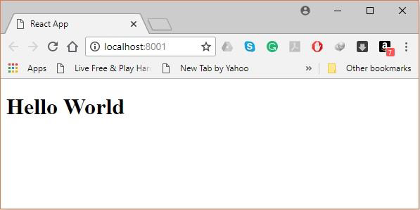
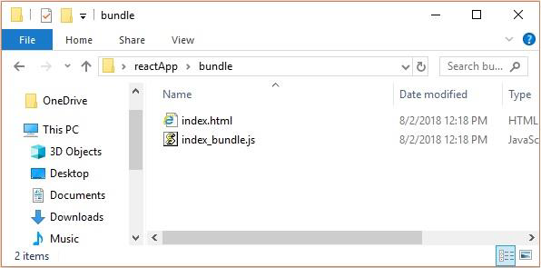

Create a folder with name reactApp on the desktop to install all the required files, using the mkdir command.
C:\Users\username\Desktop>mkdir reactAppTo create any module, it is required to generate the package.json file. Therefore, after Creating the folder, we need to create a package.json file. To do so you need to run the npm init command from the command prompt.
C:\Users\username\Desktop\reactApp>npm initThis command asks information about the module such as packagename, description, author etc. you can skip these using the –y option.
C:\Users\username\Desktop\reactApp>npm init -ySince our main task is to install ReactJS, install it, and its dom packages, using install react and react-dom commands of npm respectively. You can add the packages we install, to package.json file using the --save option.
C:\Users\Tutorialspoint\Desktop\reactApp>npm install react --saveOr, you can install all of them in single command as −
C:\Users\username\Desktop\reactApp>npm install react react-dom --saveSince we are using webpack to generate bundler install webpack, webpack-dev-server and webpack-cli.
C:\Users\username\Desktop\reactApp>npm install webpack –saveOr, you can install all of them in single command as −
C:\Users\username\Desktop\reactApp>npm install webpack webpack-dev-server webpack-cli --saveInstall babel, and its plugins babel-core, babel-loader, babel-preset-env, babel-preset-react and, html-webpack-plugin.
C:\Users\username\Desktop\reactApp>npm install babel-core --save-devOr, you can install all of them in single command as −
C:\Users\username\Desktop\reactApp>npm install babel-core babel-loader babel-preset-env babel-preset-react html-webpack-plugin --save-devTo complete the installation, we need to create certain files namely, index.html, App.js, main.js, webpack.config.js and, .babelrc. You can create these files manually or, using command prompt.
C:\Users\username\Desktop\reactApp>type nul > index.htmlOpen webpack-config.js file and add the following code. We are setting webpack entry point to be main.js. Output path is the place where bundled app will be served. We are also setting the development server to 8001 port. You can choose any port you want.
const path = require('path');
const HtmlWebpackPlugin = require('html-webpack-plugin');
module.exports = {
entry: './main.js',
output: {
path: path.join(__dirname, '/bundle'),
filename: 'index_bundle.js'
},
devServer: {
inline: true,
port: 8080
},
module: {
rules: [
{
test: /\.jsx?$/,
exclude: /node_modules/,
loader: 'babel-loader',
query: {
presets: ['es2015', 'react']
}
}
]
},
plugins:[
new HtmlWebpackPlugin({
template: './index.html'
})
]
}
Open the package.json and delete "test" "echo \"Error: no test specified\" && exit 1" inside "scripts" object. We are deleting this line since we will not do any testing in this tutorial. Let's add the start and build commands instead.
"start": "webpack-dev-server --mode development --open --hot",This is just regular HTML. We are setting div id = "app" as a root element for our app and adding index_bundle.js script, which is our bundled app file
This is the first React component. We will explain React components in depth in a subsequent chapter. This component will render Hello World.
We need to import this component and render it to our root App element, so we can see it in the browser.
Note - Whenever you want to use something, you need to import it first. If you want to make the component usable in other parts of the app, you need to export it after creation and import it in the file where you want to use it.
Create a file with name .babelrc and copy the following content to it.
{The setup is complete and we can start the server by running the following command.
C:\Users\username\Desktop\reactApp>npm startIt will show the port we need to open in the browser. In our case, it is http://localhost:8001/. After we open it, we will see the following output.
Finally, to generate the bundle you need to run the build command in the command prompt as −
C:\Users\Tutorialspoint\Desktop\reactApp>npm run buildThis will generate the bundle in the current folder as shown below.
